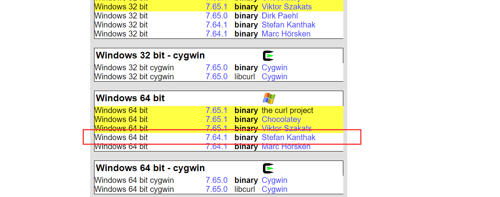
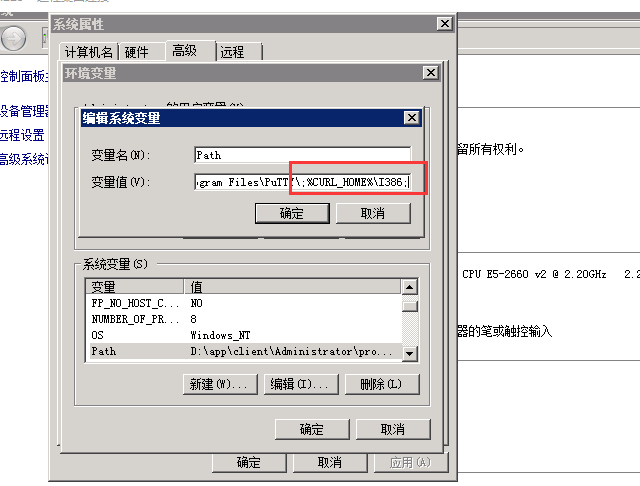

Jenkins实现钉钉消息通知自定义
实现目标
在Jenkins中钉钉默认的消息格式都是与Jenkins有关的内容，实际使用过程中我们是希望消息标题、消息内容甚至是跳转链接都由我们自定义，接下来本教程将说明如何自定义钉钉消息。
前期准备
1、了解钉钉消息自定义，推荐参考钉钉官网API：https://open-doc.dingtalk.com/microapp/serverapi2/qf2nxq#-3 。
2、下载安装Curl命令工具，消息自定义有多种方式，这里我们选择使用Curl命令进行钉钉消息接口的调用，具体下载安装步骤如下：下载Curl命令工具，下载地址：https://curl.haxx.se/download.html ，选择对应版本，以下以Windows64bit为例，下载后解压，记住解压后的文件路径。

Curl环境配置，在系统的环境配置中配置curl运行环境，新增CURL_HOME变量，变量值为刚刚解压的路径，然后再path中添加路径，如下图，保存退出，打开命令行输入 curl --help测试是否安装成功。

- 重启Jenkins，Curl命令才会生效
新建Jenkins任务
1、General，填写任务描述。
2、构建，增加Windows批处理命令构建，输入命令行curl "https://oapi.dingtalk.com/robot/send?access_token=xxx" -H "Content-Type: application/json; charset=utf-8" -d "{\"msgtype\":\"link\", \"link\": {\"text\": \"\u6846\u67b6\u6587\u6863\u5df2\u66f4\u65b0\uff0c\u8d76\u7d27\u6765\u56f4\u89c2\", \"title\": \"\u66f4\u65b0\u901a\u77e5\", \"messageUrl\": \"http://192.168.0.225:5656/soarway_hummer/\"}}",其中access_token为钉钉机器人的access_token，自行补充完整，另外中文都需要经过Unicode编码，上述例子中的text和title都是加密后的结果，Unicode编码网站：http://tool.chinaz.com/tools/unicode.aspx 。扩展说明
钉钉消息的自定义需要执行命令行，所以最好独立一个任务，若其他任务构建完成需要进行消息通知，可在配置中增加构建后操作，选择构建其他工程，输入发送钉钉消息的任务名称，勾选在构建不稳定时依然触发即可。
End